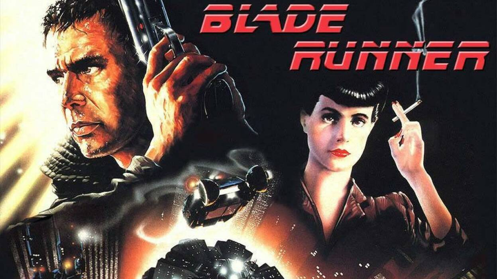

Blade Runner Movie Review

Review
Blade Runner is a timeless science fiction masterpiece that still feels powerful decades after its release. Set in a dark, rainy, neon-lit future, the film creates one of the most iconic cyberpunk worlds in cinema history. Its atmosphere, visuals, music, and deeper questions about humanity all work together to make it unforgettable.
One of the strongest parts of the film is its soundtrack by Vangelis. The music gives the movie a haunting and futuristic feeling, mixing emotion with the cold, mechanical world of the story. It helps make the city feel alive, lonely, and mysterious at the same time.
The film is also memorable because of Roy Batty, the replicant whose final speech near the end of the movie has become one of the most iconic moments in science fiction. Without needing a long explanation, the scene captures themes of memory, life, mortality, and what it means to be human.
I also like that the movie is based on Philip K. Dick’s novel Do Androids Dream of Electric Sheep? The story raises interesting questions about artificial life, empathy, identity, and whether humans and androids are really as different as they seem.
Overall, Blade Runner is more than just a science fiction film. It is a classic, timeless masterpiece with unforgettable visuals, legendary music, and deep themes that still feel relevant today.
Favourite Moment
My favourite moment is Roy Batty’s final “Tears in Rain” speech. It is emotional, philosophical, and unforgettable.
Final Rating
Movie Rating: (10/10)
Cast Members
- Harrison Ford as Rick Deckard
- Rutger Hauer as Roy Batty
- Sean Young as Rachael
- Edward James Olmos as Gaff
- Daryl Hannah as Pris
- M. Emmet Walsh as Bryant
- William Sanderson as J. F. Sebastian
- Brion James as Leon Kowalski
- Joe Turkel as Dr. Eldon Tyrell